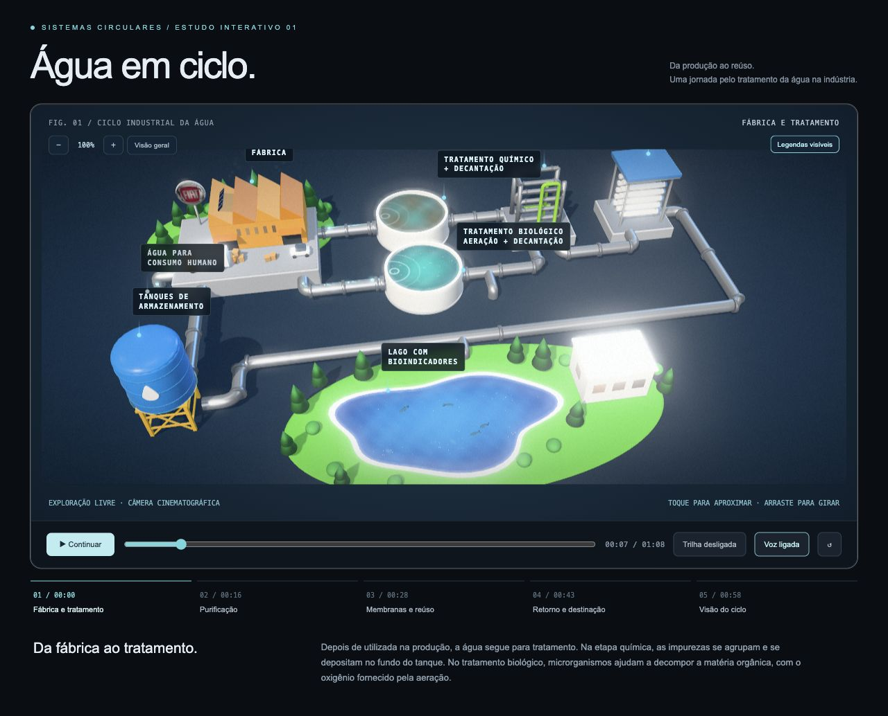

Guided narrative
Five chapters connect factory treatment, purification, membranes and reuse, return and destination, and the complete cycle.
FIAT · Interactive experience · Motion design
Water Cycle makes the industrial water journey visible, from production to treatment and reuse, through an interactive 3D experience and motion videos.

What happens to water after it is used in production? The experience follows treatment, purification, membranes, storage and the paths toward reuse or final destination.
A 3D model connects each stage. Camera movements, labels and narration help explain how the parts belong to the same cycle.
Interactive deliverable
A chapter-based journey guides the camera through the model. Visitors can pause, rotate, zoom and return to the overview to explore the system.
Five chapters connect factory treatment, purification, membranes and reuse, return and destination, and the complete cycle.
Camera controls and labels let visitors inspect the treatment stages beyond the narrated sequence.
Motion deliverables
Watch the produced motion videos in landscape and portrait formats, embedded directly from YouTube.